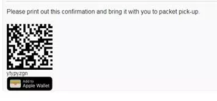

You may register for the Papa John's 10 Miler in one of five ways:
Online Registration
To register for the Papa John's 10 Miler, go to www.PapaJohns10Miler.com. You will be re-directed to EnMotive's website and must use your credit card to register.
Online registration closes at midnight ET on March 22, 2019.
Mail-In Registration
Download, complete and sign the entry form below. Send completed entry form,
signed waiver and entry fee, post-marked by March 11, 2019 to:
Papa John's 10 Miler
P.O. Box 35082
Louisville, KY 40232
*** CLICK HERE for a printable entry form (Adobe Acrobat required).
Walk-In Registration
10 Miler registrations will be accepted through March 11, 2019 at the following Louisville locations:
Fleet Feet Sports
117 Breckenridge Lane
Monday-Friday, 10 AM - 7 PM
Saturday, 10 AM - 6 PM
Sunday, noon - 5 PM Cash or Checks ONLY
Rodes For Him or For Her
4938 Brownsboro Road
Monday-Saturday,
10 AM - 6 PM, and
Thursday, 10 AM - 7 PM
*** CLICK HERE for a printable entry form (Adobe Acrobat required).
Walk-In Registration at Packet Pick-Up
Brown & Williamson Club, Gate 6
Cardinal Stadium
2800 South Floyd Street
Louisville, KY 40209
Friday, March 22, 2019 Time: 11 AM - 7 PM Fee: $60
The entrance to the Expo is near Gate 6, on the West side of the stadium, near the railroad tracks. Take the elevator to the 3rd floor. The late registration and packet pickup expo are inside the Brown & Williamson Club.
Race Day Registration - Saturday, March 23, 2019
You may register on race day from 6:00 AM - 7:30 AM. Race Day registration fee is $70.
The location for Race Day Registration & Packet Pick-Up will be located at the tunnel between the Bronze Lot and Green Lot at Cardinal Stadium.
ENTRY FEES:
Papa John's 10 Miler: Saturday, March 23, 2019
Early registration fee if registered by Monday, November 19, 2019 is $40.
Registration fee if registered November 20 - January 14, 2019 is $45.
Registration fee if registered Monday, March 11, 2019 is $50.
Online Registration fee if registered March 12 - March 22, 2019 is $60.
Late Registration fee if registering at packet pick-up on Friday, March 22, 2019 is $60.
Race Day Registration if registering on Saturday, March 23, 2019 is $70.
Deadlines:
Registration deadline for online: Friday, March 22, 2019
Registration deadline for mail: Must be postmarked by Monday, March 11, 2019
This year at packet pick up we will be using EnMotive to allow us to dynamically assign bibs. This means that you will not be receiving your bib number prior to packet pick up, you will be assigned your number when you arrive.
All you will need to bring the day of packet pick up is the confirmation email you received once you registered that contained a QR code.
If you've registered more than one person you should have received multiple confirmation emails with different QR codes.
Sample QR Code:

Packet Pick-Up:
If you experience problems with your online entry, confirmation, or billing, please contact EnMotive support at help.enmotive.com.
Participants who register via walk-in or mail-in please allow 2 to 3 weeks for the data to be entered and uploaded to EnMotive.
CLICK HERE for a printable entry form (Adobe Acrobat required *).
Papa John's 10 Miler Packet Pickup and Race Registration
Papa John's 10 Miler Packet Pickup
Friday, March 22, 2019
Time: 11:00 AM – 7:00 PM
Brown & Williamson Club, Gate 6
Cardinal Stadium
2800 South Floyd Street
Louisville, KY 40209
Race Day Registration on March 23, 2019
Saturday, March 23, 2019
Time: 6:00 AM - 7:30 AM
The location for Race Day Registration & Packet Pick-Up will be located at the tunnel between Bronze Lot and Green Lot at Cardinal Stadium.
Team Challenge
Join the Louisville Triple Crown of Running℠ Team Challenge. (presented by Novo Nordisk)
We are pleased to offer the Triple Crown Team Challenge for the Louisville Triple Crown of Running Series sponsored by Novo Nordisk. The Team Challenge will be open to any 3 – 5 person team. Your team can choose to participate in any individual or all 3 races.
There will also be a Team Challenge Triple Crown Award for any team that wins all three races. You will not only compete for team awards; each team member is also eligible for an individual time and awards!
Rules
Teams will consist of three (3) to five (5) members.
Teams will compete in one of three divisions: Male, Female, or Coed. A coed team must have at least one (1) female team member.
Each team member must be registered for the race. The registration form only serves as a team roster.
Teams must be registered by the deadlines for each race. Deadlines for each race are listed below. In order to be eligible for the Team Challenge Triple Crown Award, the same team members must run each race. A team must win all three Triple Crown Team Challenges to win the Team Challenge Triple Crown Award for their division.
Each team must assign a team captain.
Chip time will be used to determine finish times.
Each team challenge member will receive a finish score based on their order of finish among all team
challenge participants in the race. For example 1st place will be awarded 1 point, 2nd place will be
awarded 2 points, and so on for all team challenge finishers. A team's final score will be the combined
total of the three (3) lowest finish scores of team members. The team with the lowest score will be crowned Team Challenge Champions for that race.
At least 3 team members must finish the race to be eligible for team awards.
The top three (3) teams will receive awards for each race.
Participants can only compete for one team in one division.
Scoring
Team results will be based on the combined finish times for the top three finishers on each team. For teams in the Coed division, at least one female member will be counted in the three finish times.
The team with the fastest combined team time in each division will be crowned the Team Challenge Champions for that race.
Awards will be given to the top team in each division.
Deadlines For Team Registration
All three Louisville Triple Crown races: February, 11, 2019 - To be eligible for the Team Challenge
Triple Crown Awards, the team must be registered by this deadline.
Anthem 5K Fitness Classic: February 11, 2019
Rodes City Run 10K: February 25, 2019
Papa John's 10 Miler: March 11, 2019
CLICK HERE for The Team Challenge Form and Information Registration Form.
For More Information Contact:
Scott Wilcoxson
Anthem 5K Fitness Classic Race Director
502-889-2267 Anthem5kclassic@aol.com